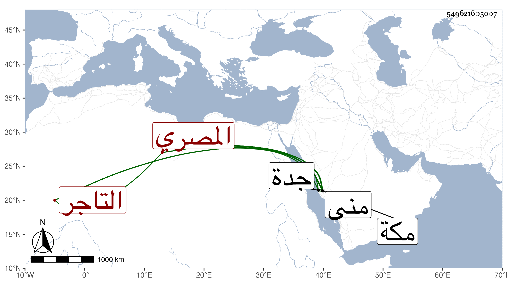

0902Sakhawi.DawLamic.ITO20230111-ara1.EIS1600.549621605007
Biography ID: 549621605007
114
أحمد بن علي بن محمد الشهاب المصري التاجر نزيل مكة ويعرف بالعاقل . ممن أنشأ بمكة دارا وكذا بمنى مع شيل عمله بها في سنة تسع وأربعين وكان مسرفا على نفسه . مات في ليلة الخميس عشري رمضان سنة أربع وستين بجدة وحمل إلى مكة فدفن بها وخلف أولادا . أرخه ابن فهد .
